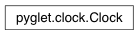

Clock Class¶
-
class
Clock(fps_limit=None, time_function=<built-in function time>)¶ Class for calculating and limiting framerate, and for calling scheduled functions.
Attributes:
MIN_SLEEPThe minimum amount of time in seconds this clock will attempt to sleep for when framerate limiting. SLEEP_UNDERSHOOTThe amount of time in seconds this clock subtracts from sleep values to compensate for lazy operating systems.
Attributes¶
-
Clock.MIN_SLEEP= 0.005¶ The minimum amount of time in seconds this clock will attempt to sleep for when framerate limiting. Higher values will increase the accuracy of the limiting but also increase CPU usage while busy-waiting. Lower values mean the process sleeps more often, but is prone to over-sleep and run at a potentially lower or uneven framerate than desired.
-
Clock.SLEEP_UNDERSHOOT= 0.004¶ The amount of time in seconds this clock subtracts from sleep values to compensate for lazy operating systems.